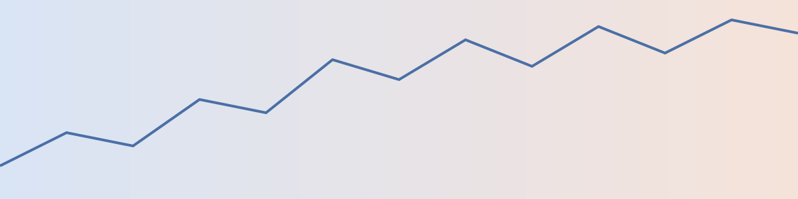

Small pages for scholarly writing
An example article
2026-11-25 · Edited 2026-11-26 · doi.org/10.5555/12345678 · CC BY 4.0
This page shows how smol renders a scholarly article. The title block has authors, affiliations, ORCID iDs, dates, a DOI, a license, an abstract and keywords. The text has citations and a bibliography; numbered equations, figures, tables and theorems with cross-references; and footnotes, notes and captions in the margin.
Keywords open science, reproducibility, typography
Introduction
Literate programming mixes code and prose (Knuth 1984). Cohen (1994) criticised significance testing, and others argued for looking at the data first (Tukey 1977; Tufte 2001, 13).
A margin note. On phones it sits below the paragraph it belongs to.
This article sets reference-location: margin, so footnotes go in the margin next to the text that refers to them.1 An aside can be written inline. An aside, written inline in the paragraph.
1. A footnote in the margin.
Methods
We model the outcome as a straight line plus noise, Equation 1:
Theorem 1 bounds the mean.
Theorem 1 (Arithmetic and geometric means) For non-negative numbers and , .
Proof. . Expand and rearrange.
Results
Figure 1 has its caption in the margin, because the article sets cap-location: margin. Table 1 summarises it.

| Group | Count | Share |
|---|---|---|
| A | 90 | 0.18 |
| B | 140 | 0.28 |
| C | 180 | 0.36 |
| D | 90 | 0.18 |

Discussion
Small pages load fast, and fast pages get read.2
2. A second footnote, to show how notes follow each other in the margin.
A callout that can be cross-referenced, as Note 1.